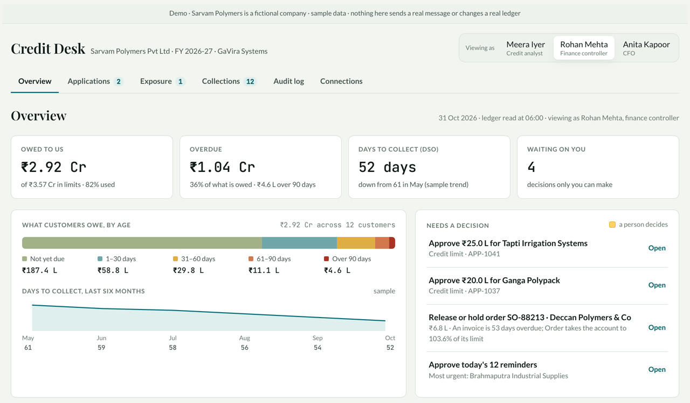
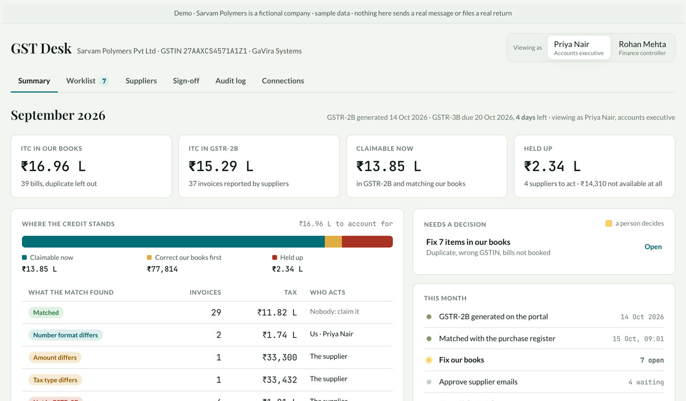
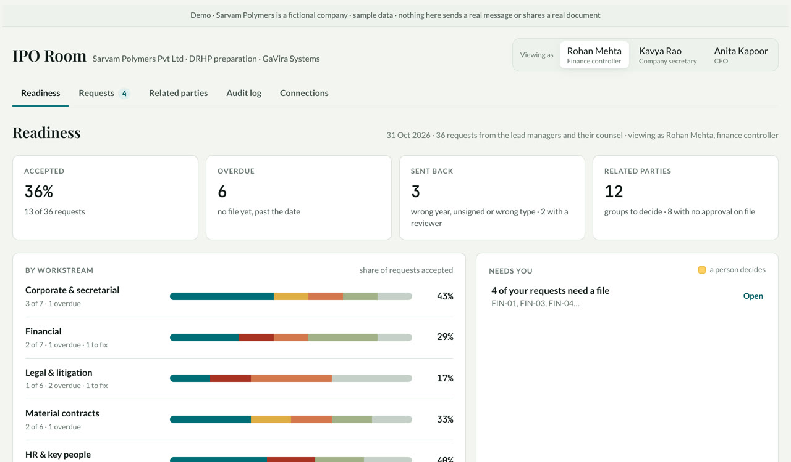
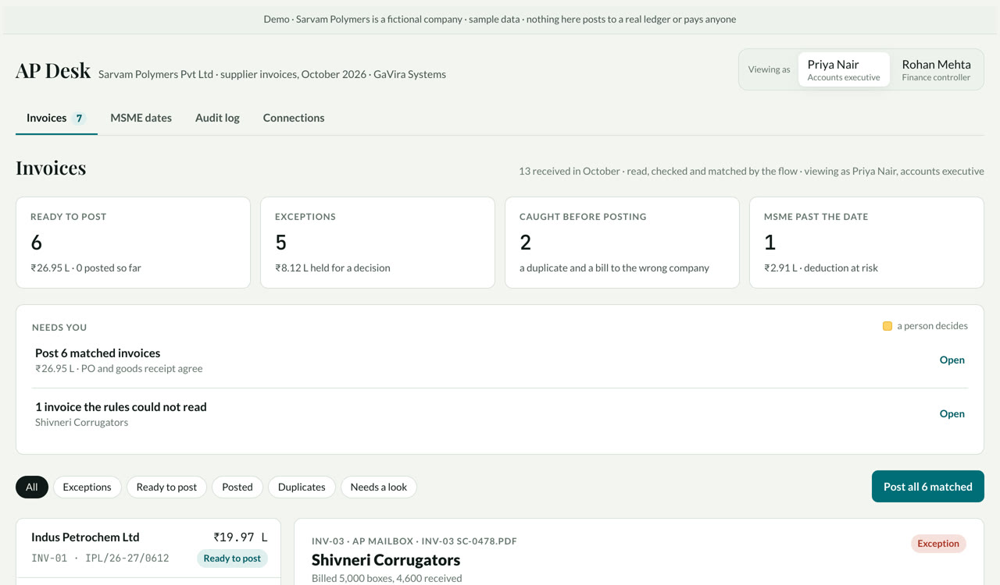

Four finance systems you can click through.
Each one runs on the same fictional company, Sarvam Polymers, with sample data. Switch people at the top right of any desk and you'll see who can approve what. Nothing here sends a real message or touches a real ledger.

Credit Desk
Credit applications checked against GST filings, payment history and the balance sheet. The limit is set by your policy, orders are checked before they ship, and collections are chased daily.
Who decides: the finance controller up to ₹50 lakh, the CFO above that.
Open the Credit Desk
GST Desk
The purchase register is matched with GSTR-2B, invoice by invoice. Our own errors land on a worklist, each supplier gets one email, and the ITC figure is signed before filing.
Who decides: the accounts executive prepares, the finance controller signs.
Open the GST Desk
IPO Room
The DRHP data room. Every request has an owner and a date, every upload is checked for document, year and signature, and the ledger is scanned weekly for related parties.
Who decides: the company secretary decides every related-party flag; nobody accepts their own upload.
Open the IPO Room
AP Desk
Supplier invoices are read and matched with the PO and goods receipt. Duplicates are caught, short deliveries held, and MSME payment dates tracked.
Who decides: the finance controller decides every exception, with a reason on record.
Open the AP Desk